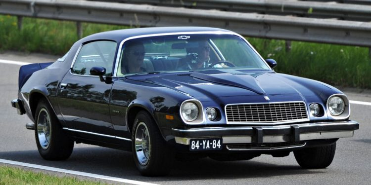
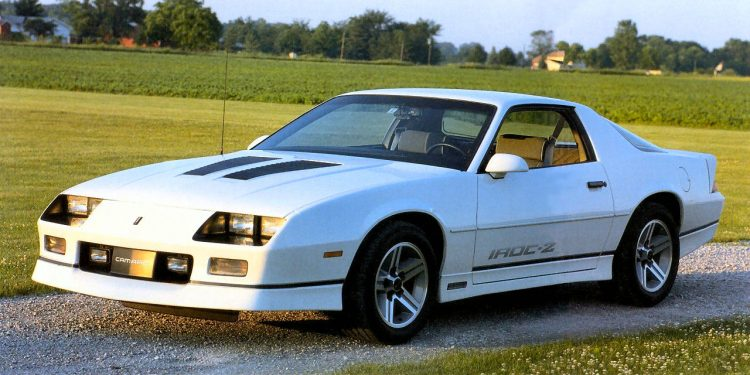
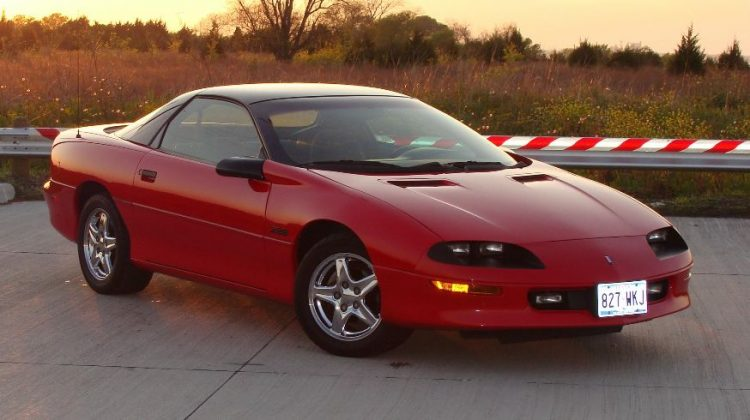
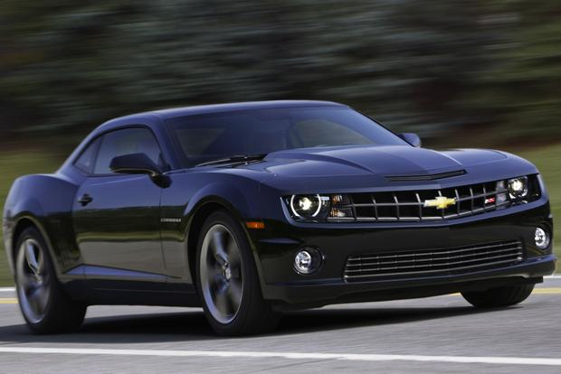
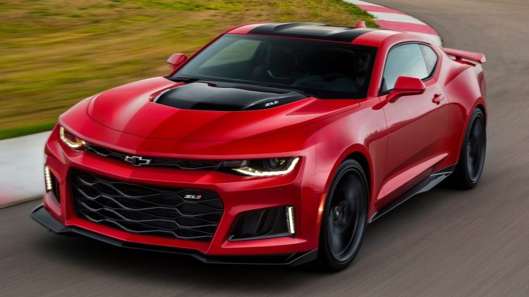

The 1967 model cars for the 1st generation Camaro were launched on September 1966 on a new RWD GM Ford body platform and came in two versions: convertible or coupe with 2 plus 2 seating.
Following the upsurge in Ford Mustang sells, Chevrolet management discovered that their dense sporty model, the Corvair, might not be as successful as the Mustang because of its rear engine style.
As such, Chevrolet attempted to sell the Camaro as featuring the same front engine, traditional rear drive configuration as the Chevy II Nova and Mustang.
Additionally, the car was created to incorporate a wide range of power plants into the engine bay.
1970-1981 (Second Generation)

The second generation was born in February 1970 with a heavily restyled design to become somewhat wider and larger.
Using the same Ford body platform, the second generation Camaro did not divert too far from its predecessor.
It had an A-arm suspension at the front, front subframe, a unibody structure, and leaf-springs for controlling the strong rear axle.
On August 1971, it made the top ten list of the best cars in the world.
1982-1992 (Third Generation)

Chevrolet used the third generation Camaros to introduce hatchback bodies, a regular OHV four-cylinder engine, 15 or 16″ wheels,
5-speed manual transmissions, Turbo-Hydramatic 700R4 4-speed automatic transmissions, and modern fuel injection.
The cars were almost 227kg (500 pounds) lighter than the 2nd generation model.
Following the introduction of the NHTSA regulations, the 1986 featured a center high-mounted stop lamp on the outside of the upper center region.
The cars also came with a new 2.8-Liter V6 engine, which was replaced in 1987 by a 5.7-Liter V8 engine, combined with an auto transmission only.
1993-2002 (Fourth Generation)

More than twenty years after the 4th Generation Camaro was introduced, the car still looks as smooth as when it was introduced.
It was an extremely aggressive design aimed at upgrading from the previous stages with greater aerodynamic performance and a provocative exterior.
The vibrant proportions for the new generation models introduced a fast rake windshield that extended the front firewall/cowl line forward, as well as a “bottom breathing engine cooling configuration.
The new design worked really well with the high-decklid rear spoiler to stimulate a sense of motion. Until now, the Camaro still looks fast and contemporary.
2007-2015 (Fifth Generation)

Manufacture of the 5th generation models began on 10 August 2006. The Camaro came with a completely new design, particularly the 2009 models that featured a convertible concept. The production of the new Camaro was done in the Car Assembly site in the Oshawa, Canada plant. After the Zeta architecture was developed, and due to its status as the GM international center of rear-wind drive development, the last engineering, design, and production of the Camaro was led by GM Holden, Australia.
On March 16, 2009, the company began working on the coupe, in SS, LT, and LS trim levels. LT and LS model use a 3.6-Liter V6 engine spitting 312hp fitted to a six-speed automatic with manual shift or six-speed manual. The SS model features a 6.2-liter LS3 V8 engine releasing 426hp and uses a six-speed manual. The automatic version uses an L-99 V8 engine producing 400hp. The appearance package of the RS is evident in both the SS and LT models, featuring 20″ wheels with SS/RS badges, a unique spoiler, halo rings surrounding xenon headlamps, and 20″ wheels. Not bad for a model that won the World’s best car design on 1 April 2010 for that year.
The production team began manufacturing the 2011 convertibles in late January 2011, with Rick Hendrick grabbing the first one through the Barret Jackson Car Auction. The same options in the coupe were available in the Convertibles (SS, RS, engines, etc.). In addition, the Convertible included an aluminum brace covering the engine assembly. After the Fukushima earthquake that happened on November 2011, certain color pigments could not be found to create certain colors. The export version of the model was introduced during that month, after a two year delay caused by the surprising domestic demand. This version came with different tail lights with incorporated amber turn and reverse signal lamps, a back bumper with no reverse light inserts, side turn signal repeaters, and various other adjustments in order to be in line with ECE requirements.
Although it was not produced continuously throughout that period, 2012 saw the Camaro’s forty fifth anniversary that was celebrated with a new model that also came with forty fifth edition exclusive twenty inch wheels, blue, red & white interior stitching, and a special stripe package. The V6 was upgraded to a 3.6-liter LFX engine that could cough 323hp. The SS version was also upgraded to the suspension system. It was standard for each of the these models to feature Bluetooth connectivity, steering wheel mounted radio and volume controls, as well as RS tail light and spoiler details.
In 2012, Camaro introduced a ZL1 model featuring a 6.2-liter LSA supercharged V8 engine that could produce 580hp. The same engine could be found in Cadillac CTS-V. Some of its other notable features included a shift knob, suede seats, a two-stage exhaust, and the characteristic twenty-inch aluminum wheels. The body design was refreshed in 2013 with the debut of the Z/28 model. Upgrades include new fog lights and a slender grille. Air conditioning was thrown in as an option, with only one speaker being retained for the seat-belt-chime.
2016-Present

The 6th generation Camaros continue the evolution. However, while the general design may be reminiscent of the 5th generation Camaros, there are several sculptural variations.
For instance, there are no rear quarter panel “gills” and the model features a more chisel-like appearance.
It looks wider and lower, which is really more of an illusion. We don’t know how the 7th-Gen Camaro will look like, although you can expect Chevrolet to maintain the same styling basics that have contributed to the success of the Chevy Camaro.
Quiz
After reading the history, how about having a short quiz?